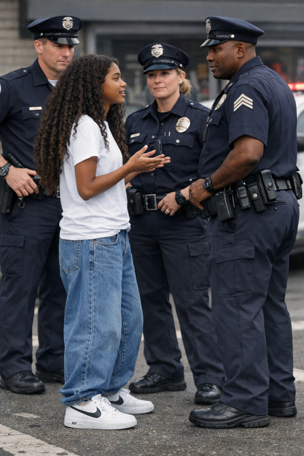

| Brooklyn lingered near the gate, her suitcase at her feet and her mind still spinning from everything that had happened. Just hours earlier, she’d walked into the police station determined to clear up what she thought was a simple mix‑up, only to find herself handcuffed and questioned about things she barely understood. The shock of being arrested—however briefly—still clung to her like a heavy coat she couldn’t shrug off. |  |
| Now, standing in the bright, echoing airport terminal, she felt a strange cocktail of embarrassment, frustration, and relief. The officers had eventually realized the mistake, apologized, and sent her on her way, but the whole ordeal left her feeling wrung out. As the boarding announcement chimed overhead, she tightened her grip on her ticket. All she wanted was to get home, step into familiar air, and let the chaos of this day fade into a story she’d tell someday with a shaky laugh. For now, though, she just needed to get on that plane and leave this mess behind. |